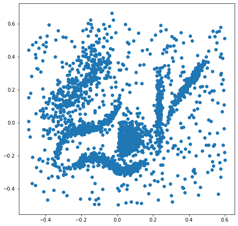
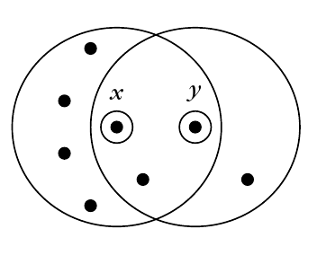
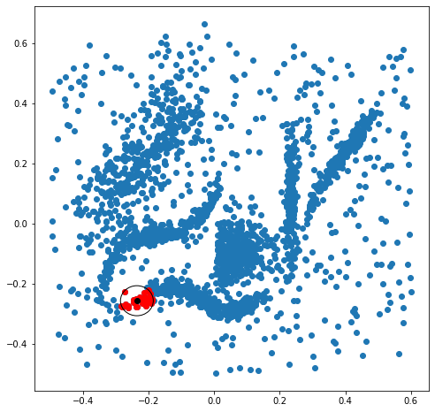
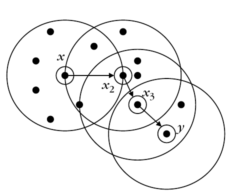
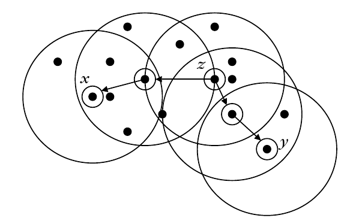
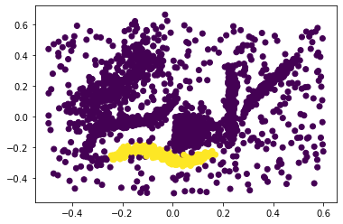
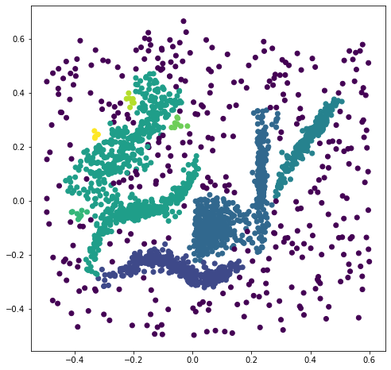
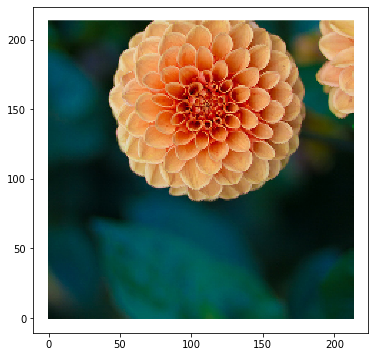

Density Based Clustering¶
Note: Text in this notebook is mostly taken as is from reference [1].
In this framework, clusters are considered as regions in the l-dimensional space that are “dense” in points of X. Most of the density-based algorithms do not impose any restrictions to the shape of the resulting clusters. Thus, these algorithms have the ability to recover arbitrarily shaped clusters. In addition, they are able to handle efficiently the outliers. Moreover, the time complexity of these algorithms is lower than \(O(N^2)\), which makes them eligible for processing large data sets.
We’ll test our algorithms with the synthetic data from the HDBSCAN python implementation. This data set has 6 natural non-isotropic clusters of different densities, plus noise.
import numpy as np
import matplotlib.pyplot as plt
X = np.load('Data/clusterable_data.npy')
figure = plt.figure(figsize=(8,8))
plt.scatter(X[:,0], X[:,1]);

DBSCAN (Density-Based Spatial Clustering of Applications with Noise)¶
The “density” as it is considered in DBSCAN around a point \(x\) is estimated as the number of points in \(X\) that fall inside a certain region in the l-dimensional space surrounding \(x\). In the sequel, we will consider this region to be a hypersphere \(V_\epsilon(x)\) centered at \(x\), whose radius \(\epsilon\) is a user-defined parameter. In addition, let \(N_\epsilon(x)\) denote the number of points of \(X\) lying in \(V_\epsilon(x)\). An additional user-defined parameter is the minimum number of points, \(q\), that must be contained in \(V_\epsilon(x)\),in order for \(x\) to be considered an “interior” point of a cluster. Before we proceed, the following definitions are in order.
A point \(y\) is directly density reachable from a point \(x\) if
\(y \in V_\epsilon(x)\) and
\(N_\epsilon (x) \geq q\).
In the figure, assuming that \(q=5\), \(y\) is directly density reachable from \(x\), but not vice versa:

For the assignment, you will implement your own version of DBSCAN, staring with a function to find the neighborhood, eps_neighborhood, here we will assume such functions are already implemented and will plot the neighborhood of a single data point.
x_idx = 100
e=0.05
nn = eps_neighborhood(x_idx, X, e)
figure = plt.figure(figsize=(8,8))
plt.scatter(X[:,0], X[:,1])
plt.scatter(X[nn][:,0], X[nn][:,1], c='r')
plt.scatter(X[x_idx][0], X[x_idx][1], c='k')
circle = plt.Circle((X[x_idx][0], X[x_idx][1]),radius=e, fill=False)
ax=plt.gca()
ax.add_patch(circle);

A point \(y\) is density reachable from a point \(x\) in \(X\) if there is a sequence of points \(x_1 , x_2 , \ldots, x_p \in X\), with \(x_1 = x\), \(x_p = y\), such that \(x_{i+1}\) is directly density reachable from \(x_i\).

It is easy to note that if \(x\) and \(y\) in the previous definition are “dense enough” (that is, \(N_\epsilon (x) \geq q\) and \(N_\epsilon (y) \geq q\)), the density reachability property is symmetric. On the other hand, symmetry is lost in the case where either of the points, \(x\) and \(y\), has less than \(q\) points in its neighborhood. However, in this case there must be a third point \(z \in X\) such that both \(x\) and \(y\) are density reachable from \(z\). This leads to the definition of the density-connectivity.
A point \(x\) is density connected to a point \(y \in X\) if there exists \(z \in X\) such that both \(x\) and \(y\) are density reachable from \(z\).

After the previous definitions, a cluster \(C\) in the DBSCAN framework is defined as a nonempty subset of \(X\) satisfying the following conditions:
If \(x\) belongs to \(C\) and \(y \in X\) is density reachable from \(x\), then \(y \in C\).
For each pair \((x, y) \in C\), \(x\) and \(y\) are density connected.
Let \(C_1 ,\ldots , C_m\) be the clusters in \(X\). Then, the set of points that are not contained in any of the clusters \(C_1 ,\ldots , C_m\) is known as noise.
In the sequel, we define a point \(x\) as a core point if it has at least \(q\) points in its neighborhood. Otherwise, \(x\) is said to be a noncore point. A noncore point may be either a border point of a cluster (that is, density reachable from a core point) or a noise point (that is, not density reachable from other points in \(X\)). Having established the previous definitions, the following two propositions hold true:
Proposition 1. If \(x\) is a core point and \(D\) is the set of points in \(X\) that are density reachable from \(x\), then \(D\) is a cluster.
Proposition 2. If \(C\) is a cluster and \(x\) a core point in \(C\), then \(C\) equals to the set of the points \(y \in X\) that are density reachable from \(x\).
These two propositions imply that a cluster is uniquely determined by any of its core points.
You will also implement the grow_cluster function, to grow a cluster from a starting point.
labels = np.zeros(len(X))
size = grow_cluster(100, X, 0.02, 5, labels, 1)
plt.scatter(X[:,0], X[:,1], c=labels);

We proceed now with the description of the DBSCAN algorithm. Let \(X_{un}\) be the set of points in \(X\) that have not been considered yet, and let \(m\) denote the number of clusters.
Set \(X_{un} = X\)
Set $ m = 0$
While \(X_{un} \neq \emptyset\) do
Arbitrarily select a \(x \in X_{un}\).
If \(x\) is a noncore point then
Mark \(x\) as noise point.
\(X_{un} = X_{un} - \{x\}\)
If \(x\) is a core point then
\(m = m + 1\)
Determine all density-reachable points in \(X\) from \(x\).
Assign \(x\) and the previous points to the cluster \(C_m\). The border points that may have been marked as noise are also assigned to \(C_m\).
\(X_{un} = X_{un} - C_m\)
A delicate point of the algorithm is the following. Suppose that a border point \(y\) of a cluster \(C\) has currently been selected by the algorithm. This point will be marked as a noise point, through the first branch of the if statement of the algorithm. Note, however, that when, later on, a core point \(x\) of \(C\) will be considered from which \(y\) is density reachable, then \(y\) will be identified as a density-reachable point from \(x\) and will be assigned to \(C\). On the other hand, if \(y\) is a noise point it will be marked as such and because it is not density reachable by any of the core points in \(X\) its “noise” label will remain unaltered.
You will use the previously defined functions to implement DBSCAN as above in the dbscan function.
def dbscan(X, e, q):
""" The DBSCAN algorithm. Unoptimized implementation with pedagogical purposes.
INPUTS:
-X: data matrix
-e: epsilon, the neighbor radius arround each point
-q: The minimum number of points for a cluster to be dense
"""
n, d = X.shape
# Array to hold cluster assignments: 0 is not considered, -1 is noise
# You need to return this array correctly
labels = np.zeros(n)
# Current cluster label
m = 0
# Instead of using sets, well just iterate over every point in order.
# If you want to choose at random, you can shuffle X before starting.
# I don't beleive it makes a difference
for i, x in enumerate(X):
if labels[i] != 0:
# Point already in another cluster
continue
nbrs = eps_neighborhood(i, X, e)
if len(nbrs) < q:
# Is a noise point (so far, can be claimed later.)
labels[i] = -1
continue
# else, x is a core point
m += 1
m_size = grow_cluster(i, X, e, q, labels, m)
return labels
# Now test different values of e and q.
# A good choice seems to be e = 0.025 and q = 4.
labels = dbscan(X, 0.025, 4)
figure = plt.figure(figsize=(8,8))
plt.scatter(X[:,0], X[:,1], c=labels);

Remarks¶
The results of the algorithm are greatly influenced by the choice of \(\epsilon\) and \(q\). Different values of the parameters may lead to totally different results. One should select these parameters so that the algorithm is able to detect the least “dense” cluster. In practice, one has to experiment with several values for \(\epsilon\) and \(q\) in order to identify their “best” combination for the data set at hand.
Implementation of the algorithm by adopting the \(R^∗\)-tree data structure can achieve time complexity of \(O(N log_2 N )\) for low-dimensional data sets.
The DBSCAN is not appropriate for cases where the clusters in \(X\) exhibit significant differences in density, and it is not well suited for high-dimensional data.
Application: Image segmentation.¶
from sklearn.datasets import load_sample_image
from sklearn.cluster import DBSCAN, KMeans
import matplotlib.pyplot as plt
import numpy as np
We will transform the image into a dataset including the coordinates of the pixels and their RGB values
from itertools import product
flower = load_sample_image('flower.jpg')
# Sumsample image to speed up clustering
sample_idxs = range(0, flower.shape[0], 2)
# Build array where the first two columns are the pixel position, the last 3 the color values
mdata = np.zeros((len(sample_idxs)**2, flower.shape[2] + 2), dtype=int)
mdata[:, 0:2] = np.array(list(product(sample_idxs, sample_idxs)))/2
mdata[:, 2:] = flower[mdata[:, 0]*2, mdata[:, 1]*2]
plt.figure(figsize=(6,6))
plt.scatter(mdata[:, 0], mdata[:, 1], c=mdata[:, 2:]/255.0, s=2, marker='+');

This is what happens using K-means to look for different number of clusters using the coordinates and the color
Application: Transit hot-spots¶
OPTICS (Ordering Points To Identify the Clustering Structure)¶
An extension of DBSCAN that overcomes the necessity of choosing carefully the parameters \(\epsilon\) and \(q\). This generates a density-based cluster ordering, representing the intrinsic hierarchical cluster structure of the data set in a comprehensible form. Experiments indicate that the run time of OPTICS is roughly equal to 1.6 of the runtime required by DBSCAN. On the other hand, in practice one has to run DBSCAN more than one time for different values of \(\epsilon\) and \(q\).
Mean-Shift¶
HDBSCAN¶
Video introducing a fast HDBSCAN implementation with a good explanation of the algorithm: https://www.youtube.com/watch?v=dGsxd67IFiU.
Documentation from HDBSCAN implementation from the video: https://hdbscan.readthedocs.io/en/latest/index.html
A nice blog post: https://towardsdatascience.com/understanding-hdbscan-and-density-based-clustering-121dbee1320e
DENCLUE¶
Quick overview of DENCLUE: https://wiki.ubc.ca/Course:CPSC522/Density-Based_Unsupervised_Learning
References¶
- 1
Sergios Theodoridis and Konstantinos Koutroumbas. Pattern Recognition. Elsevier, 2009. URL: https://doi.org/10.1016/b978-1-59749-272-0.x0001-2, doi:10.1016/b978-1-59749-272-0.x0001-2.